Bayesian Phylographic Inference
Centre for Computational Evolution
NZ Molecular Ecology 2016
What is Phylogeography?
Phylogeography is a field of study concerned with the principles and processes governing the geographic distributions of genealogical lineages, especially those within and among closely related species.
John Avise,
"Phylogeography: The History and Formation of Species."
Harvard University Press, 2000.
Early human migrations:
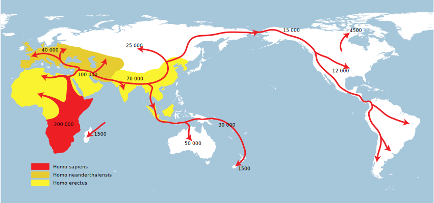Wikipedia
Phylogeographic inference
Usual data:
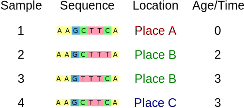Common questions:
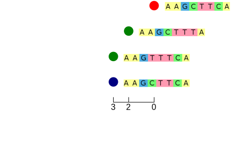
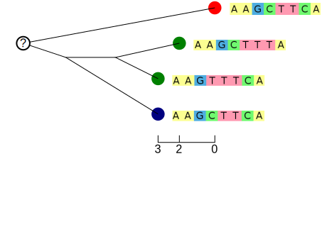
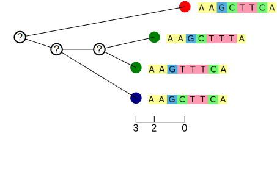
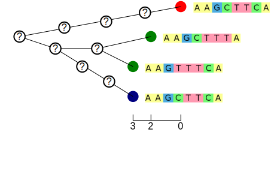
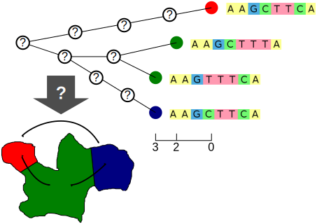
Bayesian Phylogeographic Inference
The usual phylogenetic posterior:
$$P(T,\mu,\theta|A) = \frac{1}{P(A)} P(A|T,\mu)P(T|\theta)P(\mu)P(\theta)$$
- $P(A|T,\mu)$ is the tree likelihood
- $P(T|\theta)$ is the tree prior
- $P(\mu)$ and $P(\theta)$ are the parameter priors
Where does geography fit in?
Bayesian Phylogeographic Inference
Currently two main classes of models:
- Mugration models:
- Given tree and root location, what is the probability of sample locations?
- Exist in contiuous and discrete forms.
- Developed by Phillipe Lemey et al. (PLoS Comp Biol 2009, MBE 2010)
- Structured population models:
- given sequences and locations, what is the probability of location-coloured tree?
- Currently mostly discrete.
- Earliest examples by Hudson (1990) and Notohara (1990).
Mugration models
Discrete mugration model
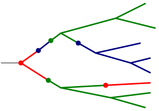
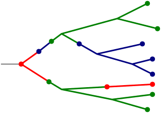
Inference: Modified tree likelihood
The standard phylogenetic posterior is modified:
\begin{align} P(T,\mu,\theta|A,L) &= \frac{1}{P(A)P(L)} P(A|T,\mu)P(L|T,M)\\ &\times P(T|\theta)P(\mu)P(\theta) \end{align}
where
- $L$ are the sampled locations, and
- $M$ is a matrix specifying the random walk.
Note the similarity between the two tree likelihood terms.
Mugration models treat location as just another trait/character.
Sampling assumption
A very important assumption made by the mugration model posterior:
Samples are assumed to be collected in a manner that is blind to their location.
- Mugration models use sample location as data.
- Just as for genetic data, non-random sampling procedures will bias results.
Equivalent population genetic model
A helpful way to visualise the mugration model is to imagine its effect on the population as a whole:
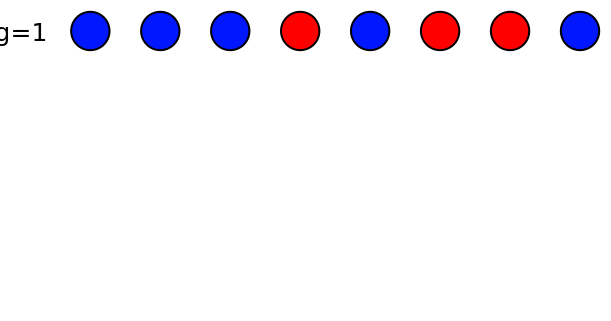
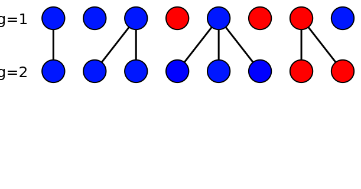
 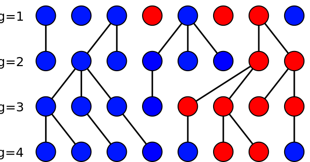
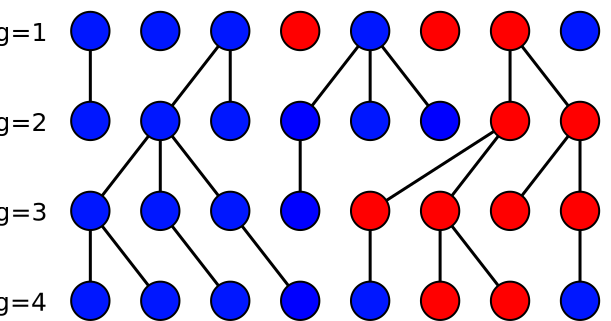
 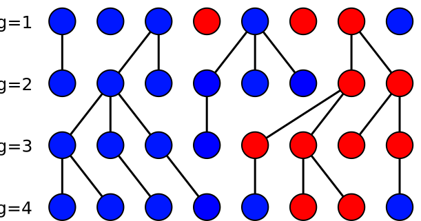
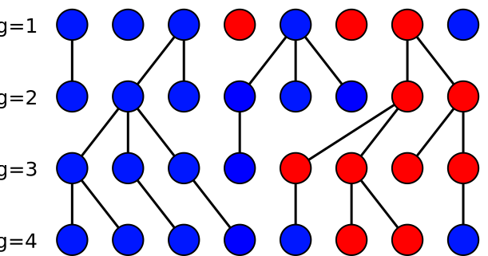
- Mugration => stochastically varying subpopulation sizes.
- A "neutral" model.